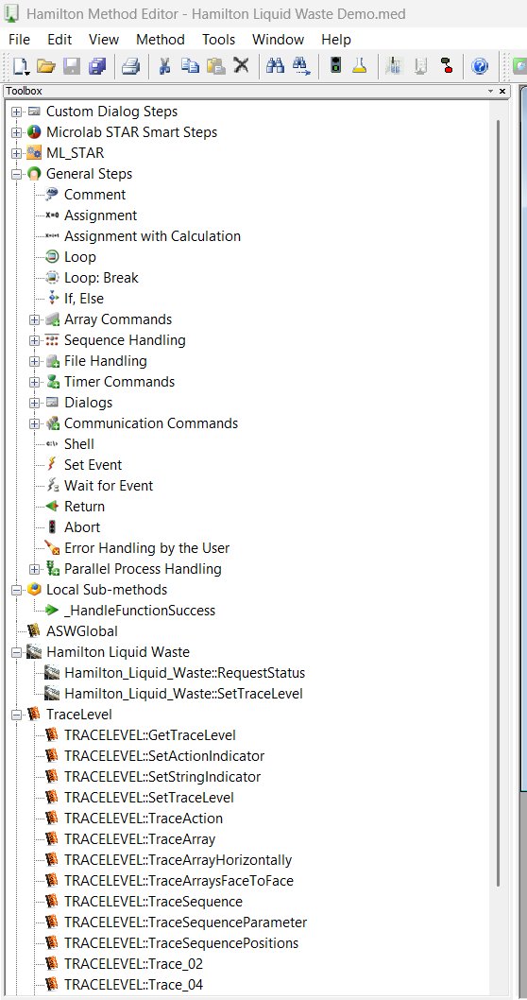

Overview
Library Manager integrates with the Hamilton VENUS software ecosystem by providing quick-launch shortcuts to VENUS editors and tools and dynamically resolving VENUS installation paths.
VENUS Tool Shortcuts
The sidebar provides launch shortcuts to the following Hamilton VENUS applications. These paths are resolved dynamically from the system registry and stored in the links database.
| Tool | Description | Default Path |
|---|---|---|
| Method Editor | Primary VENUS method development environment | Hamilton\Bin\HxMetEd.exe |
| Liquid Class Editor | Edit and manage liquid handling parameters | Hamilton\Bin\HxCoreLiquidEditor.exe |
| Labware Editor | Define carriers, racks, tubes, and consumables | Hamilton\Bin\HxLabwrEd.exe |
| HSL Editor | Direct HSL source code editing | Hamilton\Bin\HxHSLMetEd.exe |
| System Configuration Editor | Configure instrument hardware and system settings | Hamilton\Bin\Hamilton.HxConfigEditor.exe |
| Run Control | Execute and monitor VENUS methods | Hamilton\Bin\HxRun.exe |
| Hamilton Version | View installed VENUS version information | Hamilton\Bin\HxVersion.exe |

VENUS Directory Shortcuts
Library Manager also provides quick-access folder shortcuts:
| Folder | Description | Default Path |
|---|---|---|
| Bin | VENUS executables and DLLs | C:\Program Files (x86)\Hamilton\Bin |
| Config | VENUS configuration files | C:\Program Files (x86)\Hamilton\Config |
| Labware | Labware definitions for carriers, racks, and consumables | C:\Program Files (x86)\Hamilton\Labware |
| Library | HSL library files (the managed directory) | C:\Program Files (x86)\Hamilton\Library |
| LogFiles | Run traces and instrument communication logs | C:\Program Files (x86)\Hamilton\Logfiles |
| Methods | VENUS method files | C:\Program Files (x86)\Hamilton\Methods |
Path Resolution
VENUS installation paths are resolved dynamically from the Windows registry using a helper DLL. The resolved paths are stored in the links database and updated when the application detects path changes. The following paths are tracked:
- Bin directory
- Config directory
- Library directory
- LogFiles directory
- Methods directory
- Labware directory
User Authentication
Library Manager supports user/auth role display and function-protection handling through Hamilton helper calls. User role information can be used to control access to certain library management operations.